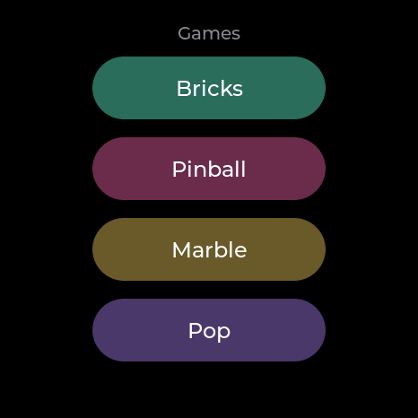

Open-source firmware for the Waveshare
ESP32-S3-Touch-AMOLED-1.75 — a 466 × 466 circular AMOLED with a
touch panel, an accelerometer and a gyro.
Trackpad & Air Mouse
Bluetooth HID. Use the face as a touchpad, or lift it and point — the
gyro drives the cursor. A set of shortcut keys rides the same link.
Clock
A seven-segment face drawn as shapes, not a bitmap, so it scales to the
panel. Timer, stopwatch and alarm sit behind it, and the lock screen is the
same face unlit.
Water
380 particles of smoothed-particle fluid in a round tank, run by the
accelerometer, with a boat that rides whatever surface they make. Tilt it
and it pours.
Orbit
The Moon, the Earth, Jupiter and the Sun, turned by hand. The maps are
NASA imagery; delete them and each body falls back to being drawn in
code.

Games
Brick breaker over five levels, pinball, a marble maze — all steered by
tilting the badge — and a sheet of bubble wrap.
Recorder
16 kHz IMA-ADPCM straight to flash, about 52 minutes of it. Plug
the badge in, press export, and it re-enumerates as a read-only USB
drive full of .WAV files.
No cloud
WiFi comes up for one reason — setting the clock, and only once the clock
has gone stale — plus the scan when you first pick a network on the badge
itself. Nothing is uploaded, there is no account, no telemetry, and recordings
leave the board only when you plug it in and ask.
Recording other people is regulated differently depending on where you
are. In some places consent from one party to the conversation is enough; in
others every participant has to agree. Find out which one applies to you
before you use it.
Put it on a board
Two ways. Neither of them needs a toolchain unless you want
one.
1 · From the browser
Plug the badge in with a USB-C data cable and open the
web flasher. It wants Chrome or Edge — WebSerial is not in
Safari or Firefox. If the Connect button never finds a port, it is usually the
cable; failing that, hold BOOT, tap RESET, release BOOT.
2 · From source
You need ESP-IDF
5.5 and nothing else; every other dependency is fetched on the first
build.
git clone https://github.com/curisama/amoled-badge
cd amoled-badge
cp main/secrets.example.h main/secrets.h # optional, may stay empty
idf.py build
idf.py -p /dev/ttyACM0 flash # COMx on Windows
tools/setup.sh does the same and works out which OS you are on.
The first build pulls down roughly 20 MB of components and takes a while;
after that it is quick. Per-OS notes are in
docs/SETUP.md.
The flash size matters. This is for the 32 MB variant of
the board. The same model is sold with less, the partition table assumes
32 MB, and the recording area will not fit on a smaller one. Flashing
replaces everything on the board, recordings included.
It runs on a PC too
The whole interface builds and runs as a desktop program, with a fake IMU and
a fake battery, so the tilt games and the power screens work there as well.
Most of this firmware was written that way.
python3 sim/build.py
PORT=8792 python3 sim/server.py # then open http://localhost:8792
How it is put together
port.h— the seam. Everything hardware-specific sits behind
it; the board and the simulator each supply a half. A file outside
port_esp.c touching hardware directly is a bug.
main/apps/— one file per app.
tools/regress.sh— reads the sources, then drives the
simulator for the faults no pattern can catch. Half a minute. Not a test
suite so much as a list of scars.